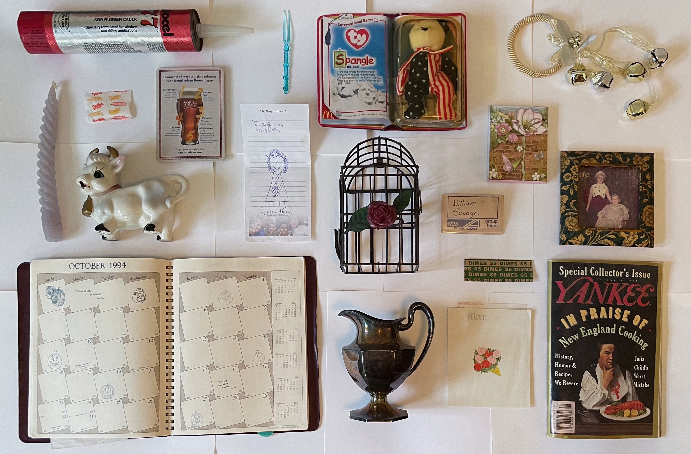

Drawer 2

- SBR Rubber caulk
Taken from a box of about 14 from my grandfathers tool shelf.
- Doodle of grandma
I Love You GranDMa
- McDonald's Beanie Baby toy
When I was one, my mother and grandmother would collect these beanie baby bears for me. They would go to every single McDonald's in CT to try and collect them all.
- Yankee Cooking magazine
My grandmother is one of the best chefs I know. She collects many recipe cards, books, and magazines.